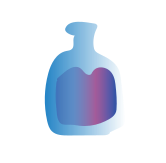
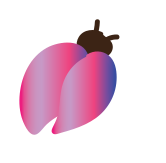
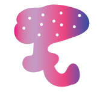

ПОМОГИ ЛЯГУШКЕ
ЛАВКА С МАГИЧЕСКИМИ ЗЕЛЬЯМИ " СНАДОБЬ"
КУПИТЬ ЗЕЛЬЕ ВСЕ О ЛАВКЕ

Зелье

Жук-навозник

Зелье из кореандора с добавлением лягушачих лапок.С помощью него, можно превратить человека в лягушку.
Жук-навозник аппетитное лакомство для лягушки.Не обладает никакими магическими свойствами.
Зелье с анчоуссами с добавлением молока.С помощью него можно превратиться в корову.
Гриб аппетитное лакомство для лосей.Для лягушек оно опасно.Вызывает галюцинацию.
Зелье с персиком.Облегчает приминение другого зелья, и помогает превратиться обратно в человека.
Мотыльков нельзя кушать,они слишком милые.